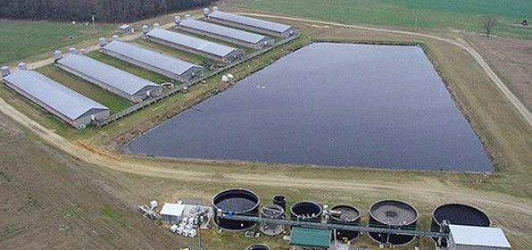

时间： 2016-01-03发布人：李倩
全国农村清洁工程建设现场经验交流会在贵阳召开，农业部总经济师张玉香出席会议，并代表农业部做了重要讲话。各有关省市农业厅分管厅长、环保站长参加会议，农业部办公厅、发展计划司、财务司、科教司、信息中心、中国农科院农业环境与可持续发展研究所、中国农学会等相关司局和直属单位的同志出席会议，国家发改委、环保部相关司局和直属单位的同志出席会议。
这次会议的主要任务是全面贯彻党的十七届三中全会通过的中共中央关于推进农村改革发展若干重大问题的决定精神和中央经济工作会议精神，总结交流农村清洁工程建设的成功经验和做法。针对当前和今后一个时期的农村清洁工程建设工作，进行动员部署。
张玉香在讲话中指出，近年来，党和国家一系列支农惠农政策的落实，我国农业综合生产能力稳步提高，农业科技得到广泛应用，农业稳步发展，农民收入大幅度增长，农户经济状况普遍改善，农村社会事业明显改观。但是我们也要清醒地看到，农业在给国民经济和社会发展提供基础支撑的同时，也存在着发展模式粗放、结构不尽合理、资源消耗大、浪费严重、污染加剧等突出问题。党中央国务院高度重视农村环境污染问题，多次要求采取切实有效措施，解决好农村脏乱差问题。农村清洁工程在巩固农村沼气、农村饮水安全等惠农政策基础上，进一步适应农村发展的新形势，从统筹城乡发展高度，丰富与拓展惠农政策的内容和空间，有效防治了农村面源污染，改善农村环境脏、乱、差面貌，是一项深受基层干部和农民群众欢迎的 “民心工程”。
关闭